File: 000600.gt.txt (if the image is defective, simply delete all Arabic text and the line will be excluded)
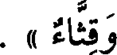
وقثاء » .
File: 000601.gt.txt (if the image is defective, simply delete all Arabic text and the line will be excluded)
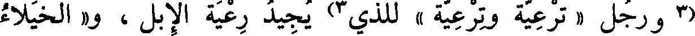
(3 ورجل « ترعية وترعية » للذي 3) يجيد رعية الإبل ، و« الخيلاء
File: 000602.gt.txt (if the image is defective, simply delete all Arabic text and the line will be excluded)
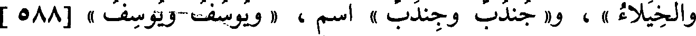
والخيلاء » ، و« جندب وجندب » اسم، « يوسف ويوسف » [588 ]
File: 000603.gt.txt (if the image is defective, simply delete all Arabic text and the line will be excluded)
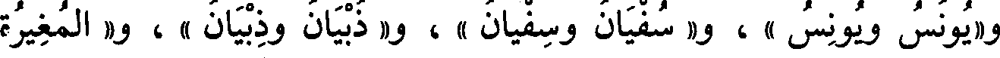
و« يونس ويونس » ، و« سفيان وسفيان » ، و« ذبيان وذبيان » ، و« المغيرة
File: 000604.gt.txt (if the image is defective, simply delete all Arabic text and the line will be excluded)
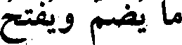
ما يضم ويفتح
File: 000605.gt.txt (if the image is defective, simply delete all Arabic text and the line will be excluded)
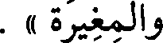
والمغيرة » .
File: 000606.gt.txt (if the image is defective, simply delete all Arabic text and the line will be excluded)
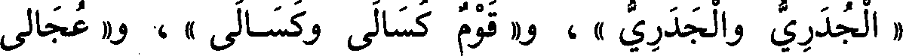
« الجدري والجدري » ، و« قوم كسالى وكسالى » ، و« عجالى
File: 000607.gt.txt (if the image is defective, simply delete all Arabic text and the line will be excluded)
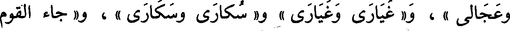
وعجالى » ، و« غيارى وغيارى » و« سكارى وسكارى » ، و« جاء القوم
File: 000608.gt.txt (if the image is defective, simply delete all Arabic text and the line will be excluded)
ما يكسر ويفتح
File: 000609.gt.txt (if the image is defective, simply delete all Arabic text and the line will be excluded)
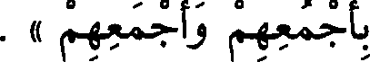
بأجمعهم وأجمعهم » .
File: 000610.gt.txt (if the image is defective, simply delete all Arabic text and the line will be excluded)
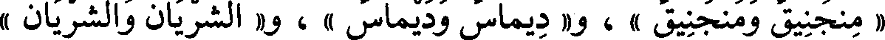
« منجنيق ومنجنيق » ، و« ديماس وديماس » ، و« الشريان والشريان »
File: 000611.gt.txt (if the image is defective, simply delete all Arabic text and the line will be excluded)
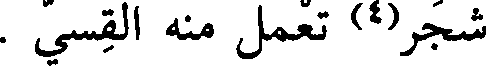
شجر(4) تعمل منه القسي .
File: 000612.gt.txt (if the image is defective, simply delete all Arabic text and the line will be excluded)
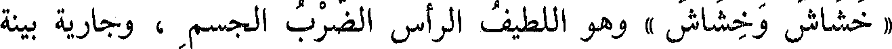
« خشاش وخشاش » وهو اللطيف الرأس الضرب الجسم ، وجارية بينة
File: 000613.gt.txt (if the image is defective, simply delete all Arabic text and the line will be excluded)
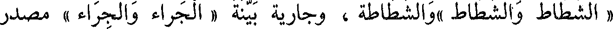
« الشطاط والشطاط »والشطاطة ، وجارية بينة « الجراء والجراء » مصدر
File: 000614.gt.txt (if the image is defective, simply delete all Arabic text and the line will be excluded)
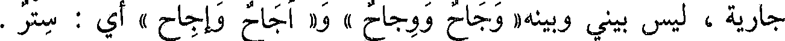
جارية ، ليس بيني وبينه« وجاح ووجاح » و« أجاح وإجاح » أي : ستر .
File: 000615.gt.txt (if the image is defective, simply delete all Arabic text and the line will be excluded)
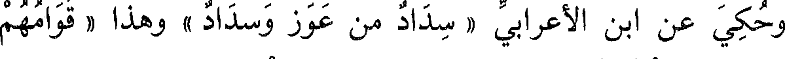
وحكي عن ابن الأعرابي « سداد من عوز وسداد » وهذا « قوامهم
File: 000616.gt.txt (if the image is defective, simply delete all Arabic text and the line will be excluded)
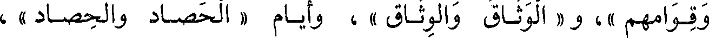
وقوامهم »، و « الوثاق والوثاق » ، وأيام « الحصاد والحصاد » ،
File: 000617.gt.txt (if the image is defective, simply delete all Arabic text and the line will be excluded)
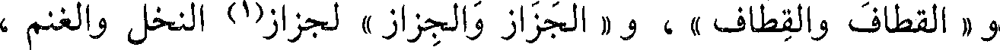
و « القطاف والقطاف » ، و « الجزاز والجزاز » لجزاز(1) النخل والغنم ،
File: 000618.gt.txt (if the image is defective, simply delete all Arabic text and the line will be excluded)
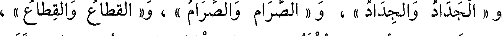
و « الجداد والجداد » ، و « الصرام والصرام » ، و« القطاع والقطاع » ،
File: 000619.gt.txt (if the image is defective, simply delete all Arabic text and the line will be excluded)
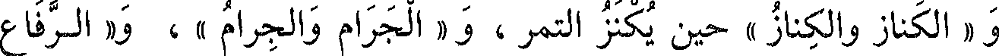
و « الكناز والكناز » حين يكنز التمر ، و « الجرام والجرام » ، و« الرفاع
File: 000620.gt.txt (if the image is defective, simply delete all Arabic text and the line will be excluded)
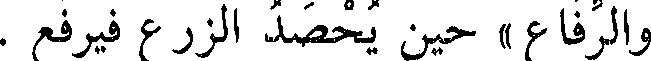
والرفاع » حين يحصد الزرع فيرفع .
File: 000621.gt.txt (if the image is defective, simply delete all Arabic text and the line will be excluded)
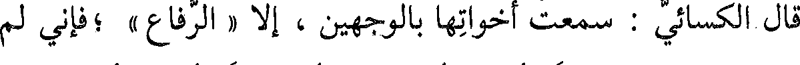
قال الكسائي : سمعت أخواتها بالوجهين ، إلا « الرفاع » ؛فإني لم
File: 000622.gt.txt (if the image is defective, simply delete all Arabic text and the line will be excluded)
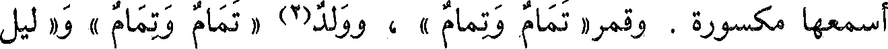
أسمعها مكسورة . وقمر« تمام وتمام » ، وولد(2) « تمام وتمام »، و« ليل
File: 000623.gt.txt (if the image is defective, simply delete all Arabic text and the line will be excluded)
باب فعال وفعال
File: 000624.gt.txt (if the image is defective, simply delete all Arabic text and the line will be excluded)
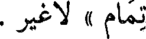
تمام «» لا غير.
File: 000625.gt.txt (if the image is defective, simply delete all Arabic text and the line will be excluded)
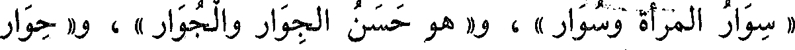
« سوار المرأة وسوار » ، و« هو حسن الجوار والجوار » ، و« حوار
File: 000626.gt.txt (if the image is defective, simply delete all Arabic text and the line will be excluded)
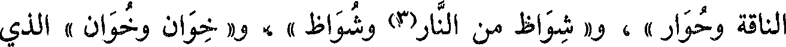
الناقة وحوار » ، و« شواظ من النار(3) وشواظ »، و« خوان وخوان » للذي
File: 000627.gt.txt (if the image is defective, simply delete all Arabic text and the line will be excluded)
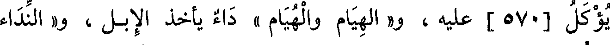
يؤكل [ 570 ] عليه ، و« الهيام والهيام » داء يأخذ الإبل ، و« النداء
File: 000628.gt.txt (if the image is defective, simply delete all Arabic text and the line will be excluded)
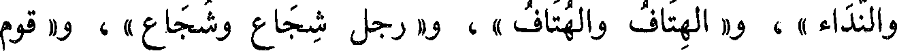
والنداء » ، و« الهتاف والهتاف » ، و« رجل شجاع وشجاع» ، و« قوم
File: 000629.gt.txt (if the image is defective, simply delete all Arabic text and the line will be excluded)
باب ما يقال بالياء والواو
To Save: `Ctrl+s`, make sure to choose `Webpage, complete`!